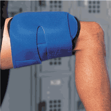

<table width="600" border="5" align="center" cellpadding="0" cellspacing="0" bordercolor="#333399">
  <tr> 
    <td><table width="100%" border="0" cellspacing="0" cellpadding="10">
        <tr> 
          <td valign="top"></td>
          <td valign="top"><p><font color="#333399" size="3" face="Arial, Helvetica, sans-serif"><strong>IMPACT™ 
              QUAD PADS<br>
              </strong></font><font size="2" face="Arial, Helvetica, sans-serif">The 
              IMPACT™ Quad Pad protects players following thigh bruises through 
              arthron's patented &quot;dome&quot; design that rests over but not 
              on the injured area. The dome's shield deflects blows away from 
              the injury, protecting the quadriceps and enabling players to return 
              to action sooner. The one-size-fits-all pad is durable enough to 
              be reused year after year, yet can be custom-shaped by immersing 
              in hot water or a Hydrocollator.™</font></p>
            <p><font size="2" face="Arial, Helvetica, sans-serif">Universal<br>
              $89.95 each</font></p>
            <p><font color="#333399" size="3" face="Arial, Helvetica, sans-serif"><strong>To 
              order: 1 800 758-5633</strong></font></p></td>
        </tr>
        <tr> 
          <td valign="top">&nbsp;</td>
          <td align="right" valign="top"><a href="#" onClick="javascript: window.close()"></a>&nbsp;</td>
        </tr>
      </table></td>
  </tr>
</table>